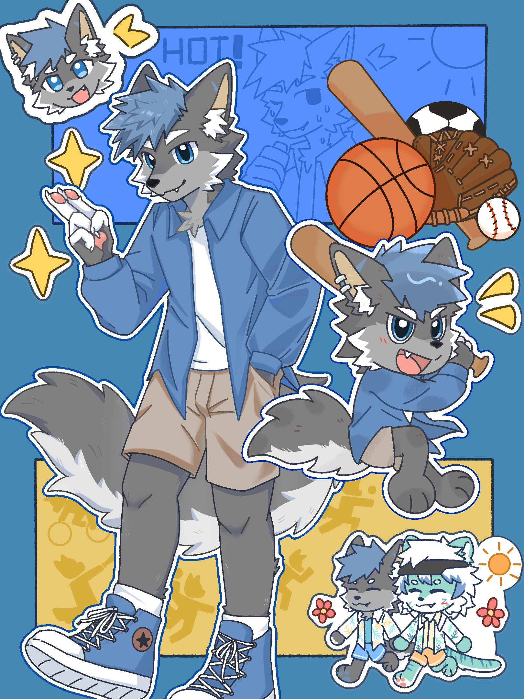
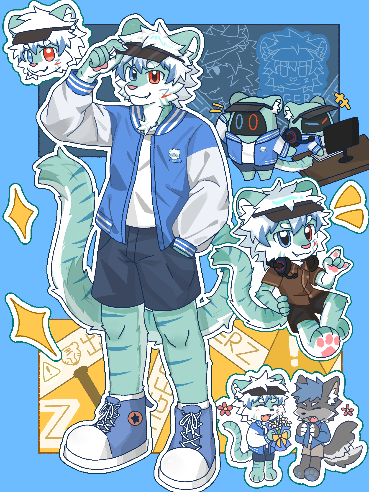
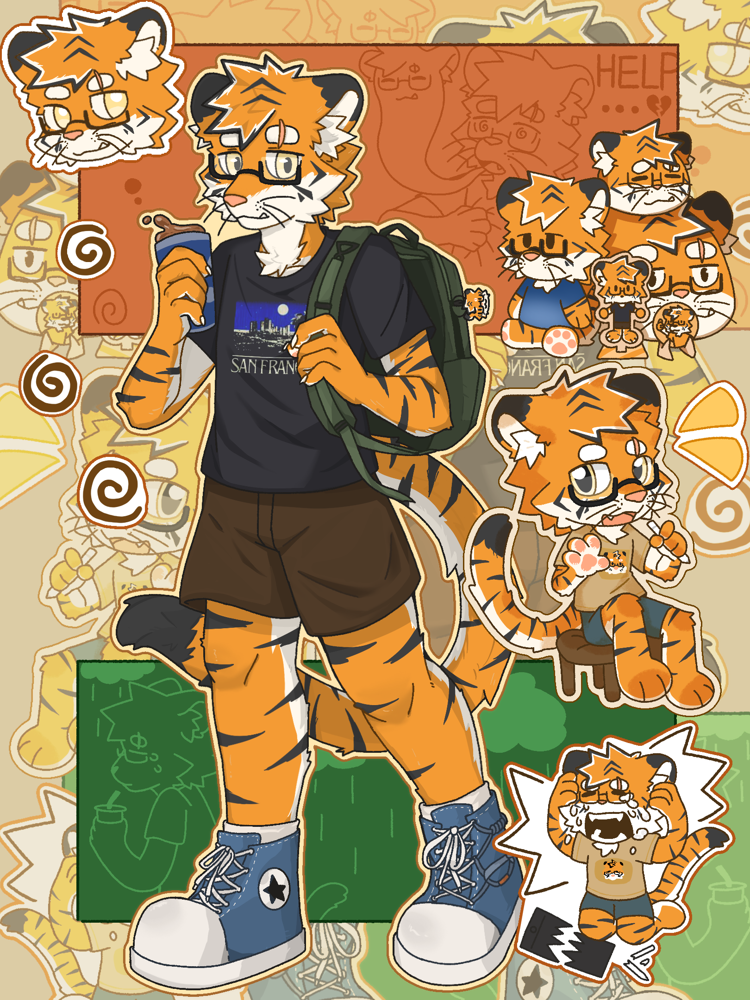
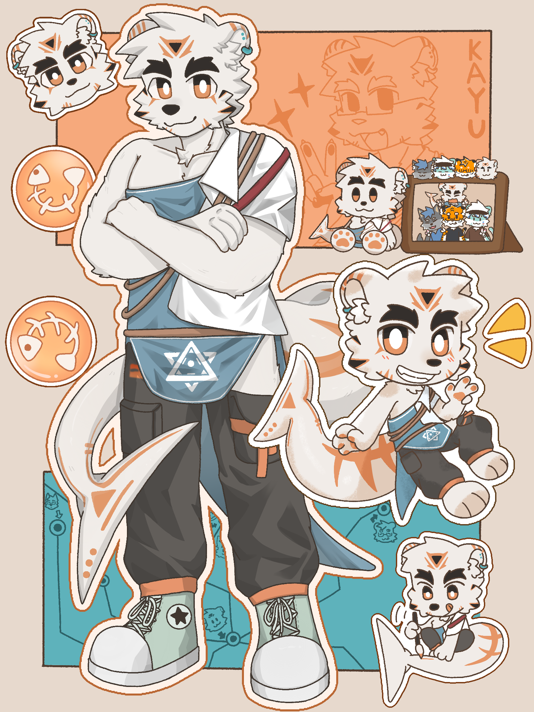
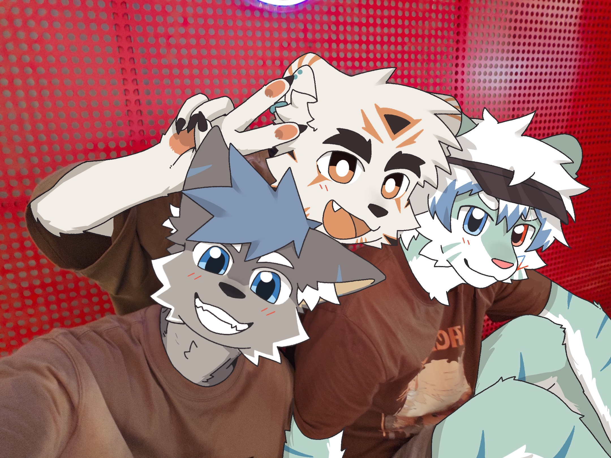
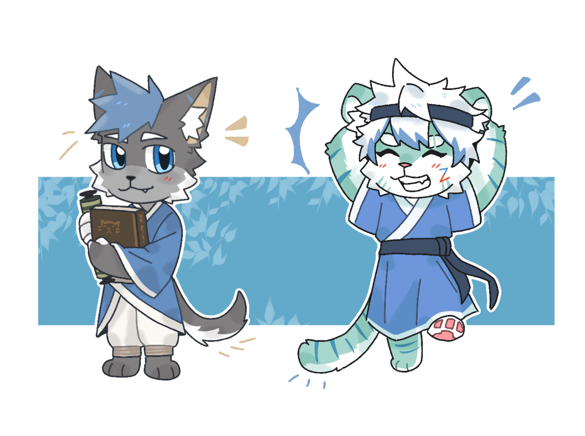

Tito / 头头
灰蓝狼，店长
Tito's Cafe / 头头咖啡屋
这里是 Tito 和朋友们的小小周边柜。先像走进咖啡屋一样坐下，再慢慢看角色、设定图、贴纸和那些想被带回家的瞬间。

Featured
角色不是商品标签，而是选择周边时最自然的入口。每张设定图都像咖啡屋里的一把椅子，等你坐近一点。

灰蓝狼，店长

浅蓝老虎角色

橘色老虎角色

白色熊角色
Counter Picks

合照、纪念日、路上的光，构成周边之外的温度。

适合做成明信片、展板和后续专题页面。